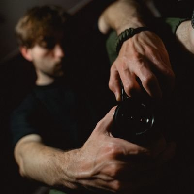
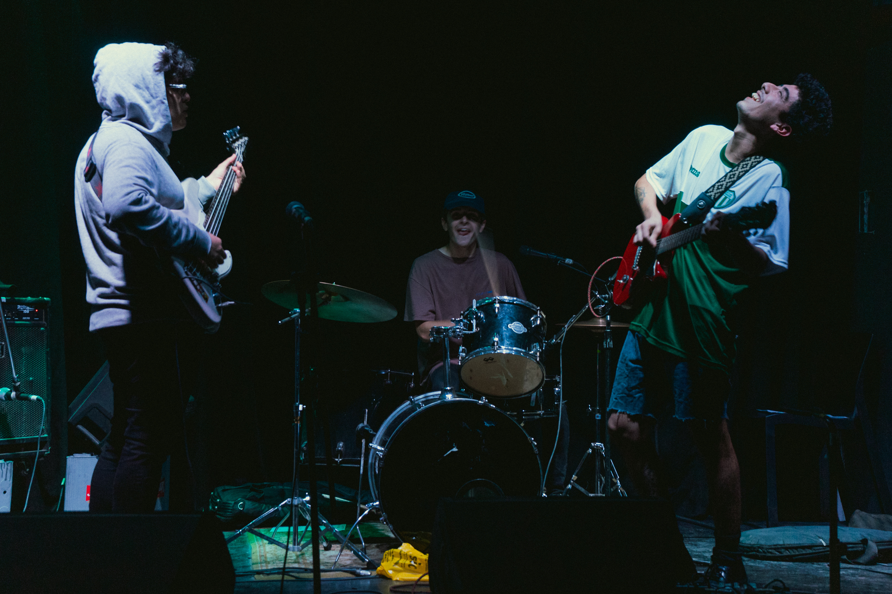

<div class="h-100">
  <div class="row row-cols-1 row-cols-md-3 g-4">
    <div class="col">
      <div class="card h-100">
        
        <div class="card-body">
          <h5 class="card-title">Acerca de...</h5>
          <p class="card-text">
            Soy Fermin Vazquez, tengo 27 años y nací en La Plata, BsAs. Soy
            músico, fotógrafo y estoy aprendiendo a programar.
          </p>
        </div>
      </div>
    </div>
    <div class="col">
      <div class="card h-100">
        <a href="https://www.instagram.com/p/CclhpYVvnER/"
          ></a>
        <div class="card-body">
          <h5 class="card-title">Mi fotografía</h5>
          <p class="card-text">
            Soy fotógrafo desde 2016 y me especializo principalmente en la
            fotografía documental y el registro de eventos culturales. Mi
            trabajo personal es relacionado a los retratos, sean intimos o
            situacionales, en estudio o en la calle.
          </p>
        </div>
        <div class="card-footer">
          <small class="text-muted"
            ><a href="https://www.instagram.com/__riidosnap/"
              >Mi trabajo en Instagram
              </a
          ></small>
        </div>
      </div>
    </div>
    <div class="col">
      <div class="card h-100">
        <a
          href="https://open.spotify.com/track/1Y4WxPCbSKsYyjkIKsNJ7m?si=3c94b8d2e2d846a6"
          ></a>
        <div class="card-body">
          <h5 class="card-title">Mi música</h5>
          <p class="card-text">
            Soy guitarrista y compositor desde los 12 años, y actualmente cuento
            con mi proyecto más desarrollado y longevo, <b>Hyalina</b>, una
            banda de metal matemático alternativo.
          </p>
        </div>
        <div class="card-footer">
          <small class="text-muted"
            ><a href="https://hyalina.bandcamp.com"
              >Escuchar en BandCamp</a
          ></small>
        </div>
      </div>
    </div>
  </div>
</div>
